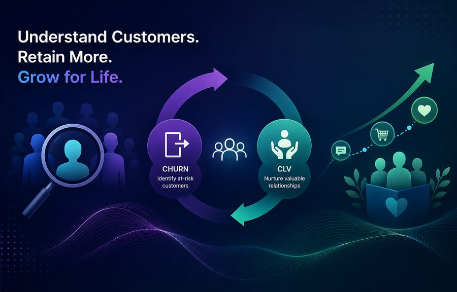
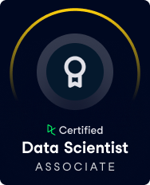

Himanshu Laddhad
Experience
Building a single EDI-to-XML mapping by hand took three to five weeks. I architected a retrieval-grounded agent to collapse that, then trained a small local model to remove the per-call API dependency at production volume, and measured it honestly against the frontier-model pilot rather than claiming parity.
- Architected a RAG-grounded EDI-to-XML mapping agent routing messages through Groq to a GPT-4.1 tool-calling model, retrieving from a 400+ file XSLT corpus keyed by company and function, cutting mapping build time from 3–5 weeks of manual development to 3–4 hours.
- Trained a small language model (Qwen) with QLoRA covering transform generation, modification, repair and explanation, grounded by the same retrieval layer, reaching 73% first-pass Altova validity against the GPT-4.1 pilot's 78%, removing per-call API dependency across the full task set.
- Delivered the Streamlit evaluation harness fronting both pipelines, executing generated XSLT against user-supplied test cases in-session, handed off as the reference implementation for PartnerLinQ's engineering team to productionise.
The mandate was open-ended: modernise how the business used its operational data, with no predefined scope. I drew the boundary myself: my work began at the warehouse layer, consuming what upstream systems produced and holding them to a data contract rather than claiming ownership I could not enforce. The decision I would defend hardest is that failed rows are quarantined with a typed exception code, never dropped, because a missing record is not a clean record.
- Owned the curated analytics layer on SAP Datasphere, modelling four event streams from Parquet on ADLS Gen2 into a conformed star schema across inbound, harmonised and curated layers at 35K rows/day and 670–700 attributes per entity on a single join key, replacing manual consolidation for 10+ cross-functional consumers.
- Engineered the dbt build and test suite on the dbt-hana adapter, enforcing uniqueness, referential and accepted-value contracts in SQL plus custom tests for stage sequence and N-sigma drift, quarantining failed rows with typed exception codes.
- Designed the Power BI consumption layer over SAP HANA ODBC on hourly incremental refresh, partitioned on ingest timestamp so late-arriving corrections are never stranded, surfacing 15+ KPIs across 3 stakeholder groups, replacing 20+ hours/week of hand-built reporting.
- Orchestrated severity-tiered exception alerting through Power Automate to Teams adaptive cards with writeback acknowledgement and per-rule cooldowns, cutting exception rates 15% against an open-versus-acknowledged SLA view.
Planning ran on spreadsheet moving averages fed by a single source, and an earlier attempt to patch it had stalled. My manager handed it to me because I questioned the assumption rather than the tool. I proposed a rebuild instead of a patch, proved it on one product line in a two-week parallel run, and only then asked for full commitment. When a stale input later produced silently wrong forecasts, I flagged it the same day and rolled back. The teams that had been most sceptical trusted the system more afterwards.
- Led a 3-person rebuild of demand forecasting from Excel to XGBoost in Python on SAP BW, engineering lag, volatility, capacity-headroom and pipeline-weighted features across 500+ SKUs and 4 product lines, cutting MAPE 18% against the spreadsheet baseline.
- Devised a two-track strategy routing regular-demand SKUs to the model and intermittent-demand SKUs to a trailing annual average, validated on a temporal split with a 6-month holdout, replacing gut-based planning for procurement and capacity teams.
- Built a Python breadth-first traversal over a multi-level component hierarchy, exploding SKU forecasts into per-component monthly demand consumed directly by procurement, holding 98% on-time delivery against a 95% benchmark.
- Deployed time-series monitoring flagging demand deviations 4–6 weeks ahead across 6+ international markets, with automated alert routing into operational dashboards.
- Instituted freshness validation and output sanity checks as the pipeline's first operations after a stale input produced silently wrong forecasts, halting bad data before it reached procurement.
A short, focused internship, and where I first learned that most of the loss in a process concentrates in a handful of exception modes, provided the data is clean enough to rank them honestly.
- Structured a Pareto analysis over 9 months of operational time-series data in Python, ranking 140+ exception categories by contribution to downtime, lifting process efficiency 10% for the operations team.
- Integrated corrective-action tracking against the ranked categories across procurement, quality assurance and operations, cutting exception frequency ~90% and reprocessing rate 14% on a high-volume workflow.
Selected work

Churn & Lifetime Value Intelligence
Thirty-five features engineered from 410M log rows across 6.7M subscribers, with an expected-value layer that turns two separate model scores into one retention decision.
BankCheck
Grades US banks and credit unions using only federal data sources, deliberately avoiding the affiliate-link incentives that shape most comparison sites.
PrepStack
A mock-interview and resume-review coach that routes across three different language models by conversational phase, trading cost against quality where each one is strongest.
Further repositories
Education
MS, Business Analytics & Information Management
Purdue University, Daniels School of Business · GPA 3.7
Graduate teaching assistant for AI for Business. Coursework across causal inference, machine learning, data management and analytics strategy.
BTech, Mechanical Engineering
Sardar Vallabhbhai National Institute of Technology, Surat · GPA 3.6
Where the habit of tracing a system back to its first principles started, and the reason I still reach for the underlying mechanism before the model.
Skills
Certifications & awards
Certifications
Machine Learning Foundations
AWS Academy Graduate · 2026

Data Scientist Associate
DataCamp · 2024
SQL Associate
DataCamp · 2024
Certified Cloud Practitioner
Amazon Web Services · CLF-C02
Azure AI Fundamentals
Microsoft · AI-900
Desktop Specialist
Tableau
Awards & recognition
-
2026
Graduate Teaching Assistant, AI for Business
Purdue University
-
2025
Excellence in Planning and Efficiency
JCB India
-
2024
Rising New Joinee Award
JCB India
-
2021–22
Research Intern, EV market landscape
Indian Institute of Management, Ranchi
Writing
Why I used three different LLMs to build one interview coach
The case for routing by conversational phase instead of picking a single model, and what it costs you when you get the routing wrong.
Mar 2025When a retailer's core forecasting model could not predict a moving holiday
A demand forecasting case study on why seasonal smoothing breaks against events that shift date every year, and what replaces it.
Let’s connect.
Graduated August 2026 and currently on OPT, authorised to work in the US now. Looking for opportunities in data science and AI.
himanshuladdhad11@gmail.com